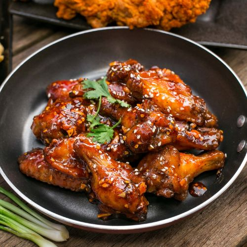

Sticky Chicken Wings

Description
This mouthwatering recipe combines tender chicken wings, marinated to perfection in a harmonious blend of savoury and sweet sauces. As they bake to a golden crispness, the glaze caramelizes, creating a finger-licking coating that's both sticky and flavourful. Whether it's for game nights, gatherings, or a satisfying treat, these sticky chicken wings are sure to be a crowd-pleaser that leaves everyone craving for more.
Ingredients:
- 1kg chicken wings: drums and flats separated and wing tips removed (about 24-30 wing pieces)
- 1 teaspoon salt
- 1 teaspoon garlic powder
- ¼ teaspoon black pepper
- cooking spray
For the sticky BBQ sauce:
- 1½ cup plain BBQ sauce, use your favorite brand
- ¼ cup brown sugar
- ¼ cup honey
- 2 tablespoons ketchup
- 1 teaspoon yellow mustard
- 1 teaspoon worcestershire sauce
Steps:
You will also need: 2 Large Baking Sheets, 1 Cooling Rack, 1 Pastry Brush
- Preheat the oven to 190°C (375°F)
- Season the chicken wings with the salt, garlic powder and pepper.
- Spray a baking sheet lightly with cooking spray. Place the chicken wings, in a single layer, on the baking sheet. Bake them for 30 minutes.
- Remove the wings from the oven. Line a clean baking sheet with a cooling rack.
- Spray the cooling rack lightly with cooking spray. Arrange the chicken wings, in a single layer, on the cooling rack, skin side up. Bake them for 15 minutes.
While the wings continue to cook, make the sauce
- Add the barbecue sauce, brown sugar, honey, ketchup, mustard and Worcestershire sauce to a saucepan. Heat the barbecue sauce over medium heat, stirring frequently to avoid sticking.
- Simmer the sauce for a few minutes, until the sugar melts and the ingredients are incorporated. Give the sauce all of your attention while it’s simmering! Do not leave the pan unattended.
- Lower the heat to low and keep the sauce warm until ready to use, stirring occasionally.
- Add about ¾ of the sauce to a bowl and reserve the rest for serving.
Coat the wings with the barbecue sauce
- Remove the wings from the oven and turn each one so the paler side is up. Brush them with a generous amount of the barbecue sauce and bake for another 5 minutes.
- Again, remove them from the oven and turn each wing. Brush them with a thick layer of the sauce.
- Return the wings to the oven and bake another 5 minutes.
- Without turning them this time, sauce them one final time and bake for another 5 minutes.
- Arrange the chicken wings on a platter serve them with the remaining barbecue sauce on the side.
Return to home